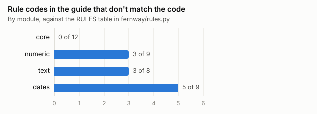

Fernway docs audit
Every README, changelog, API reference and guide across the Fernway repos, checked against the 3.0.2 code and release notes. Most of what's stale is one story: the docs still describe 2.x, before 3.0 renamed the package, renumbered the rules and made strict mode the default.
Every doc, by status
One row per repo or site, one column per kind of doc. Hover a cell for what it found; click it to jump to the detail.
A number is how many claims in that doc are at the cell's status. Sign-off cells show where the maintainer review stands instead.
| Repo | README | CHANGELOG | API reference | Guidesone chip per guide | Maintainer sign-offa state, not a count |
|---|---|---|---|---|---|
| fernwaycore library | 3 | 1 | 2 | awaiting review | |
| fernway-clicommand line | 2 | signed Oct 30 | |||
| fernway-schemasshared JSON schemas | 1 | none | not asked | ||
| docs sitegenerated from fernway | none | 5 | awaiting review | ||
| examplessix notebooks | 1 | none | n/a |
Findings by kind
Every finding per row, split by what is wrong. The bars share one scale.
Show as a table
| Wrong number | Wrong name or path | Superseded behavior | Missing | Broken link | Other | Total | |
|---|---|---|---|---|---|---|---|
| fernway | 5 | 2 | 0 | 0 | 0 | 3 | 10 |
| fernway-cli | 0 | 1 | 2 | 0 | 0 | 0 | 3 |
| fernway-schemas | 0 | 0 | 0 | 0 | 0 | 1 | 1 |
| docs site | 0 | 1 | 0 | 1 | 5 | 0 | 7 |
| examples | 0 | 0 | 1 | 0 | 0 | 0 | 1 |
The five that matter most
- 1
The install line names a package that no longer exists
stale- What it says
- Both the README and the tutorial tell new users to
pip install fernway-validate. - Evidence
pyproject.tomlnames the packagefernway.fernway-validatewas last published as 1.9.4, so a new user installs a two-year-old release.- The fix
- Change the install line to
pip install fernway. - Where the fix goes
- Fixed in the docs PR for fernway; the site picks it up on its next build.
- 2
The rules guide uses the 2.x rule codes
stale
- What it says
- Eleven of the 38 rule codes in the validation-rules guide are the numbers rules had before 3.0.
- Evidence
- Compared code by code with
RULESinfernway/rules.py; the dates module drifted most. - The fix
- Regenerate the three stale tables from
RULES, and add a docs check that fails when they drift. - Where the fix goes
- Fixed in the docs PR for fernway; the drift check is a separate PR.
- 3
Five API pages link to a removed module
stale- What it says
- Five API reference pages link to
fernway.legacy, which 3.0 removed. - Evidence
- Each link returns a 404 on the built site.
- The fix
- Point the links at
fernway.compatandfernway.RULES, which replaced it. - Where the fix goes
- Flagged to the site maintainers. The pages come from docstrings in fernway, so the fix lands there.
- 4
The CLI docs still show
stale--strict![Terminal output of fernway check --help with no --strict option.]()
- What it says
- The command reference tells users to pass
--strictto fail on rule errors. - Evidence
- 3.0 made strict mode the default and replaced the flag with
--lenient; the help output has no--strict. - The fix
- Say strict is the default, and document
--lenientfor warnings only. - Where the fix goes
- Fixed in the docs PR for fernway-cli.
- 5
The migration guide promises 2.x configs load unchanged
unverifiable- What it says
- Upgrading needs no config changes; 2.x config files load as they are.
- Evidence
- No test loads a 2.x config, so nothing in the repo confirms or refutes it.
- The fix
- Add a test that loads the 2.x sample configs, or narrow the sentence to what has been tried.
- Where the fix goes
- Flagged to the fernway maintainers; the docs PR leaves the sentence until a test settles it.
Detail, row by row
Every finding, with the doc's line, what it says, and the fix written as current state.
core library
The README and the rules guide still describe 2.x. The changelog's one error sits in a dated entry, so it's flagged and left as written.
README.md
stale| Line | Status | The doc says | The fix |
|---|---|---|---|
| 12 | stale | Install with pip install fernway-validate. | pip install fernway; the package was renamed in 2.0. |
| 15 | stale | Requires Python 3.8 or later. | Python 3.10 or later, as pyproject.toml requires. |
| 31 | stale | from fernway.validate import check | from fernway import check; 3.0 folded the submodule into the package. |
Guide: validation rules
staleRULES in fernway/rules.py.Three of the guide's four rule tables use the 2.x numbering. The dates module moved the most: five of its nine codes changed when 3.0 split date rules from time rules. The core table is still right.
API reference
unverifiableTwo claims can't be checked from the code or the release notes: that Schema.compile caches its result, and that check is thread-safe. Neither has a test behind it.
Guide: migrating to 3.0
unverifiableIt promises that 2.x config files load unchanged. No test loads a 2.x config, so the promise can't be confirmed either way.
CHANGELOG.md
flag onlyThe 2.4.0 entry is dated 2023-03-14, a week before its tag. Release entries are records, so this is flagged and not edited.
command line
The command reference predates 3.0's switch to strict mode by default.
Command reference
stalefernway check --help at 3.0.2. The option list has no --strict.The reference still documents the 2.x flags. At 3.0 strict mode became the default, --lenient replaced --strict, and lint folded into check.
| Line | Status | The doc says | The fix |
|---|---|---|---|
| 48 | stale | Pass --strict to fail on any rule error. | Strict is the default; pass --lenient to report failures as warnings. |
| 70 | stale | Run fernway lint PATH. | fernway check PATH; 3.0 removed lint. |
Guide: shell completion
staleIt installs completion with fernway completion install, which 3.0 replaced with the standard --install-completion option.
shared JSON schemas
Current, apart from one claim nothing in the repo can confirm.
README.md
unverifiableIt says the schemas validate under JSON Schema draft 2020-12. The test suite runs only draft-07, so the claim can't be checked.
generated from fernway
The site's API pages are generated from the docstrings in fernway, so most of its fixes land in that repo.
API reference pages
stale| Page | Status | Links to | The fix |
|---|---|---|---|
api/check | stale | fernway.legacy.check_all | fernway.compat.check_all |
api/schema | stale | fernway.legacy.SchemaV1 | fernway.compat.SchemaV1 |
api/rules | stale | fernway.legacy.rule_table | fernway.RULES |
api/report | stale | fernway.legacy.to_html | fernway.compat.to_html |
api/config | stale | fernway.legacy.load_ini | fernway.compat.load_ini |
Tutorial
staleStep 1 installs the old package name, and the tutorial never creates the fernway.toml file that step 4 reads.
FAQ
not yet readNot read yet; it's queued for the next pass.
six notebooks
The README pins an old version, and the six notebooks are still to read.
README.md
staleIt tells readers to install fernway<3 before running the notebooks. The notebooks import 3.0 names, so that pin breaks every one of them.
Notebooks
not yet readSix notebooks are queued for the next pass. Each is run end to end before its prose is checked.